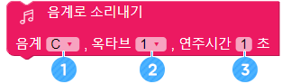

기다려주세요..

쿠킹 타이머 로봇을 만들어봐요
• 타이머의 원리를 알아봅니다.
• 정해진 시간마다 특정 동작을 실행하게 해봅니다.
• 쿠킹타이머 프로그램을 만들고 설명해 봅니다.
가. 쿠킹 타이머
음식을 만들 때 조리 시간을 정확하게 측정하기 위해 ‘쿠킹타이머＇라는 장치를 사용합니다.
① 타이머는 요리할 때 뿐만 아니라 공부할 때도 사용할 수 있습니다.
② 안전 사고를 예방하는 데에도 사용할 수 있습니다.
③ 타이머는 시간을 정확하게 제어하기 때문에 매우 편리합니다.
나. 어썸봇 안에도 시계가 들어있어요
어썸봇 안에는 1,000분의 1초 단위로 시간을 측정하는 아주 정교한 시계가 들어있어요. 그래서 어썸봇의 시계기능을 이용하면 쿠킹 타이머를 만들 수 있습니다.

어썸봇에는 시간을 보여줄 수 있는 숫자판이나 시계가 없습니다. 어떻게 하면 어썸봇이 측정된 시간을 표현할 수 있을까요?

어썸봇은 소리를 낼 수도 있고, 움직일 수도 있습니다. 그래서 다음과 같은 방법으로 시간을 표현할 수 있습니다.
이 밖에 다른 표현 방법들이 있을지 더 생각해봅시다.
가. 기다리기 ([ADVANCE] 그룹)
지정한 초만큼 동작하지 않고 기다립니다. 이 블록을 이용하면 10초, 30초, 60초 등 원하는 간격에 맞춰 동작을 실행하도록 할 수 있습니다.
① 클릭 후 기다릴 시간을 초단위로 입력합니다.
나. 반복하기 ([ADVANCE] 그룹)
블록 안의 명령들을 원하는 횟수만큼 반복합니다.

① 반복할 횟수를 지정합니다.
② 반복할 블록을 추가합니다.
[반복하기]블록과 [기다리기]블록을 이용하여 30초마다 [플랩] 동작을 하는 프로그램을 만들어 보세요.
다. 옵션이 없는 춤동작들 ([DANCE] 그룹)
어썸봇의 발가락 부분을 세워서 발레 같은 동작을 취합니다.
어썸봇이 제자리 걸음을 합니다.
두 발을 파닥거리는 동작을 합니다.

두 발을 비비는 동작을 합니다.

두 발의 발끝을 들어 올립니다. [발레] 동작의 반대입니다.
문워크 춤동작을 합니다.

어썸봇의 한 발을 뒤로 꺽은 후 한 번 까딱입니다.
라. 옵션이 있는 춤동작들 ([DANCE] 그룹)
모든 춤 동작의 옵션은 어썸봇의 움직일 발 방향을 선택합니다.

어썸봇의 한 발을 들어서 움직이는 동작을 실행합니다.

어썸봇의 한 발을 들어올리면서 뒤로 꺽는 동작을 합니다.
* [마우스], [스윙] 동작을 이용하여 양 발을 한 번씩 움직이는 프로그램을 만들어보세요.
마. 부저 켜기 ([SOUND] 그룹)
부저를 사용할 수 있는 상태로 만듭니다. 부저로 소리를 내기 전에는 반드시 이 블록을 사용해야 합니다. 이 블록을 먼저 사용하지 않으면 부저를 사용할 수 없으니 주의하세요.
바. 부저 끄기 ([SOUND] 그룹)
부저의 사용을 마치고 다시 다른 부품들을 사용할 수 있게 해줍니다. 부저를 사용하는 동안에는 다른 부품을 사용할 수 없습니다. 연주를 마친 후에는 반드시 이 블록을 사용해야 다른 부품들을 작동시킬 수 있습니다.
사. 음계로 소리내기 ([SOUND] 그룹)
이 블록을 이용하면 주파수를 이용해서 원하는 소리를 낼 수 있습니다.
① 연주하고 싶은 음계를 목록에서 선택합니다.
② 연주할 음계의 옥타브를 목록에서 선택합니다.
③ 소리를 낼 시간을 지정합니다.
3옥타브 파에 해당하는 음을 0.5초 동안 내보세요.
아. 박자와 시간
우리가 흔히 사용하는 악보의 박자별 연주 시간은 다음과 같습니다. 음악을 연주할 때 각 박자별 연주 시간을 잘 반영하여 연주 프로그램을 만들어보세요.
① 3옥타브 G음을 8분음표 박자로 소리내 보세요.
② 1분을 기다린 후 부저로 음악을 연주하는 프로그램을 만들어 보세요.
가. 알고리즘
다음과 같은 방법으로 쿠킹 타이머를 만들어 볼 수 있습니다. 다른 방법으로 만들 수 있는 방법들도 함께 생각해보죠.

나. 나만의 쿠킹 타이머 만들기